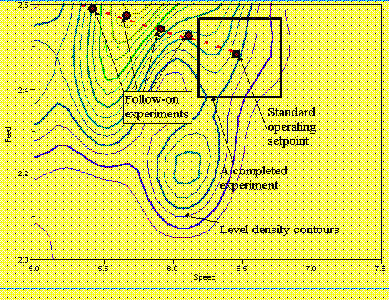
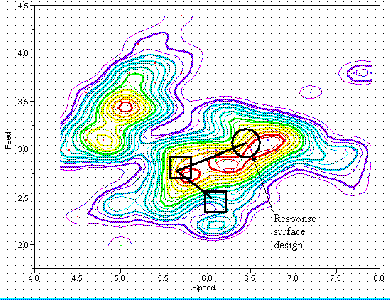
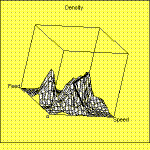

|
5.
Process Improvement
5.2. Introduction 5.2.2. What is experimental design?
|
|||
|
The best approach frequently involves a sequence of small experiments Screening designs help select the important input factors
Response surface contours suggest where to further experiment
Successive iterations move towards the process optimum
|
It is often a mistake to believe
that ‘one big experiment will give the answer.’
A more useful approach to experimental design is to recognise that while one experiment might give a useful result, it is more common to perform two or three, or maybe more, experiments before a complete answer is attained. In other words, an iterative approach is best and, in the end, most economical. Putting all one’s eggs in one basket is not advisable. The reason an iterative approach works best is it is usual to move through stages of experimentation, each stage supplying a different kind of answer. A common first stage is where we have little knowledge of the important input factors influencing the output(s). There could be many, say twenty, inputs each with a potential effect. Most of these inputs will turn out to be unimportant, but we do not know which ones in advance. At this stage we are trying to screen out the significant few from the trivial many, and so we call experiments to do this ‘screening designs .’ Clearly we assume here a certain sparsity of effects. Having found the small handful of important factors, a second experimental stage would be to find a direction in which to move the settings of the inputs to optimize the output. The diagram below shows contours of the response surface, and a square box where an experiment was run around the standard operating setpoint. This small snapshot of local contours of the process response surface suggests the direction to move the input settings in so as to get a better output.  FIGURE 2.6 Local response-surface contours discovered by an experiment around a process standard operating setpoint We have only discovered the contours of a small part of a larger system. Nevertheless, we have managed to establish a direction of improvement which, if followed (see next figure) will lead us to or near to the actual process optimum.  FIGURE 2.7 Full contours of the response surface, showing iterative experimentation to reach the area of process optimum. In the above diagram, a second designed experiment was run to determine the change in exploratory direction so as to move closer to the process optimum. The last step will be to determine the shape of the response surface at the optimum so as to be aware of the stability of the optimal point. To do this, a focused design called a ‘response surface design’ is used. This design uncovers the linear, interaction, and quadratic effects of the model. Of course, not every experimental program follows this logic. In many cases, only one or two initial screening designs are required, especially of the goal is one of troubleshooting. It is quite common, however, to do at least two experiments, the first being screening and the second used to uncover the important interaction effects amongst the ‘vital few’ factors.  |
||